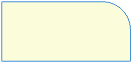
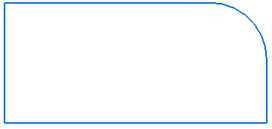

Closed Sketch Indicator command
Use the Closed Sketch Indicator command  in the sketch environment to indicate that a sketch is geometrically closed. When
you select the command, the inside area of the sketch is shaded.
in the sketch environment to indicate that a sketch is geometrically closed. When
you select the command, the inside area of the sketch is shaded.

Nested closed sketches are displayed with a different opacity.

When you deselect the command, the inside of the closed sketch is not shaded.

When exiting the sketch environment during feature creation, sketches may appear to be painted or indicated to be closed, but are reported as open during profile validation. Most likely, this is because the sketch contains elements that are geometrically closed, but do not have connect relationships applied to the endpoints. To correct this, apply connect relationships to the endpoints in the sketch.
You can use the Closed Sketch option on the Colors tab on the Solid Edge Options dialog box in the sketch environment to set the color and opacity for closed sketches.
Look up more details
Sketch View commandSketch command
Project to Sketch command
Project to Sketch command bar
Project to Sketch Options dialog box
Peer Edge Locate command
Silhouette Edge Locate command
Clean Sketch command
Clean Sketch command bar
Clean Sketch Options dialog box
Copy Sketch command
Copy Sketch command bar
Copy Sketch To Target dialog box
Activate Regions command
Merge with Coplanar Sketches command
Migrate Geometry and Dimensions command
Tear-Off Sketch command
Tear-Off Sketch command bar
Tear-Off Sketch Options dialog box